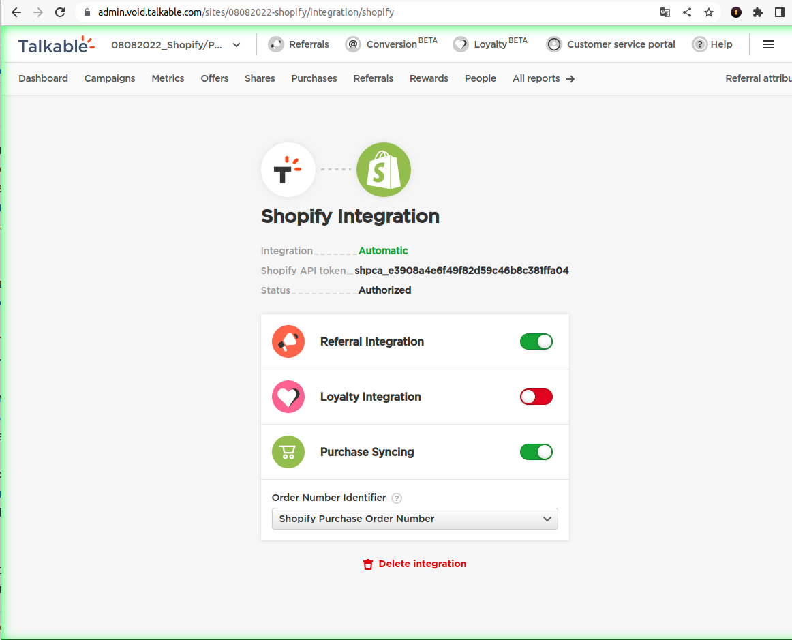

Shopify Purchase Syncing¶
Purchase Syncing is a feature available for Shopify customers integrated with Talkable extension. It allows automatic purchases synchronization from Shopify instead of (or additionally to) passing purchases with Talkable JavaScript integration from a browser or Talkable backend integration.
To access this setting, go to the Shopify Integration page (Settings → Shopify Integration).

Warning
Purchase Syncing currently is not supported for customers who pass to Talkable purchases with Purchase Order Number, different from Shopify Purchase ID (Talkable default Shopify integration behavior) as it will lead to double purchases registering.
Talkable backend integration¶
Talkable backend integration allows you to directly sync your Shopify purchases with the Talkable API, allowing you to track different types of Order Number Identifier.
You can choose your purchase ID in the integration section (Settings → Shopify Integration → Order Number Identifier).
How it works?¶
It works as a server-to-server integration between Shopify and Talkable using Shopify orders/create webhook.
When enabling Purchase Syncing, Talkable creates and subscribes to this orders/create webhook from the customer’s Shopify store. When disabling the setting, the webhook and the subscription are deleted.
Each time a purchase is placed on a customer’s store, Shopify triggers the webhook and Talkable registers the purchase with attributes sent in the webhook’s payload.
Shopify Webhook payload and Talkable Purchase attributes mapping¶
Talkable uses next mapping when syncing purchases from Shopify Webhook payload:
Talkable Purchase attribute |
Shopify Webhook payload (Shopify Purchase attribute) |
|---|---|
Order Number |
payload.id (Shopify Purchase ID) |
payload.email |
|
Subtotal |
payload.total_price |
Taxes |
payload.total_tax |
Discount Amount |
payload.total_discounts |
Shipping Cost |
payload.total_shipping_price_set |
Items Purchased |
payload.line_items |
Coupon codes |
payload.discount_codes |
IP Address |
payload.browser_ip |
Shipping Address |
payload.shipping_address (joined by comma) |
Shipping Zip |
payload.shipping_address.zip |
Traffic Source |
“purchase-syncing” (constant value) |
Visitor |
None (empty) |
Post Purchase Campaign setup¶
To render Talkable Post Purchase Campaign, there is still a need of registering purchases with Talkable JavaScript integration (is managed automatically by Talkable).
JavaScript purchase registration has priority over Purchase Syncing and registers the purchase from JavaScript integration first.
In this setup Purchase Syncing is just ensuring that attributes passed with JavaScript integration are aligned with purchases data from Shopify and notifies Talkable Integrations team in case it is not.
Here is detailed explanation of this logic:
Purchase Syncing tries to find Purchase in Talkable by Order Number (Shopify Purchase ID).
If there is no such Purchase, the one will be registered with attributes described in Shopify Webhook payload and Talkable Purchase attributes mapping
If such Purchase exists, Purchase Syncing compares Email and Subtotal with Shopify Webhook payload. In case these attributes differ, Talkable Integrations team will is notified. Otherwise, nothing happens and the existing Purchase data is kept unmodified.